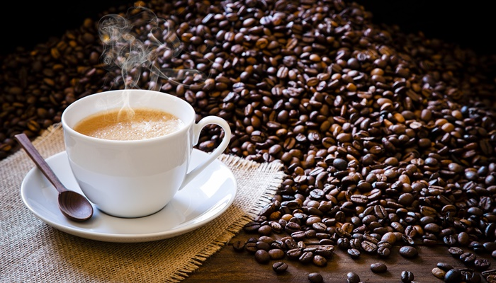

김혁인의 먹자골목
음식
- 한식
- 중식
- 일식
- 양식
- 분식
- 카페
김혁인의 먹자골목
김혁인의 카페골목입니다.

카페는 커피를 전문으로 하는 취급점이다.
- 1920년~1930년대 : 서양 신문물의 유입과 함께 커피를 즐길 수 있는 공간의 필요성이 커지면서
일본인 청년, 사교계 인사, 일본 유학을 다녀온 엘리트 계층, 문화예술인을 중심으로 퍼져 나갔다.
- 1960~1970년대 : 시화전, 미술 전시회, 연극 공연 등이 열리는 문화공간과 동시에 사교의 장으로 거듭났다.
다방은 다시는 커피만 마시는 곳이 아닌 문화를 공유하고 여유를 즐길 수 있는 휴식의 장소가 됐다.
- 1960년대 : 서울 대학로에 있는 ‘학림다방’이 그 대표주자로, 당시의 다방문화를 이끌었다.
그 후 1970년대에는 다방에 DJ까지 등장해 음악을 들을 수 있는 음악다방으로 전성기를 보냈다.
- 1980년대 : 후반기에 들어서야 본격적으로 대중적인 커피전문점이 등장하기 시작하면서 새로운 카페문화의 태동기를 맞이했다.
어두운 분위기의 다방에서 좀 더 밝고 공개적으로 변화하기 시작했다.
- 1990년대 : 에스프레소 커피의 수요가 생겨나며 오늘날과 같은 커피전문점이 들어섰다
1998년 6월 할리스커피 강남점이 들어선 이후, 1999년에는 이화여자대학교 인근에 1호점을 낸 스타벅스 등
외국 커피 프랜차이즈 회사들이 국내에 입점하며 현재에 이르렀다.